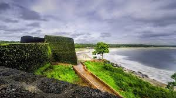
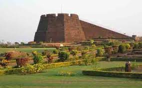
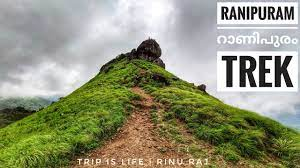
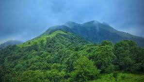
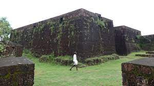

Kasaragod is often described as the land of forts and gods. The place is noted
for its ritual dance Theyyam, an art that blends dance, myth, drama, music,
art and theatrics. A performing art popular in the northern districts of Kerala,
Theyyam can be enjoyed in all its glory at Kasaragod.
In Theyyam, the performer is considered as a medium between the supernatural
and the mortal worlds. The Theyyam season gifts one with a grand visual treat
as different Theyyams take centre stage and perform the ancient art. Listen to
the many lores at Kasaragod, a land known for festivals, folk and visual art.
Yakshagana is one of the popular Indian theatre forms performed in Kasaragod in
Kerala and the South Canara districts of Karnataka. The art form is characterised
by extravagant costumes, elaborate make-up and unique stage techniques. The
stories are mostly based on episodes taken from epics like the Ramayana and
the Mahabharatha.
Yakshagana cannot be described as an exclusive folk, classical or rural art form
since it incorporates elements of all these in its narration and performance. The
art form involves dance, music and dialogues. Yakshagana literally translates to
‘the music of celestial beings,’ and the narration is accompanied by background
music played using percussion instruments. The singers and artistes perform in
sync with it to create this celestial musical drama.
Kasaragod is almost synonymous with the magnificent key-hole shaped fort, the
Bekal Fort which is a historic structure. Other forts include the Chandragiri Fort,
Hosdurg Fort, Kumbala Fort, Povval Fort, Kundamkuzhi Fort and Bandadukka Fort.
BEKAL FORT
Bekal Fort (View Video) in Kasaragod holds a unique place in the history of
Kerala. The fort, facing the Arabian Sea, was built purely for defence purposes,
and is one among the biggest forts in Kerala.
The walls of the Bekal Fort, which
is a few centuries old, are made of
laterite and are about 12 m in height.
The fort has witnessed many fierce
battles both human and natural, and its
continued existence is a testimony to the
engineering brilliance of those times.
Near the fort stands an Anjaneya Temple
and a mosque that testify the religious
harmony that once prevailed in the region.



RANIPURAM
Ranipuram hills stand at a height of 750 m above
sea level, and is the region of highest altitude in the
district. Once known as Madathumala, Ranipuram is a
paradise for trekkers and Nature lovers who are drawn
by the evergreen Shola woods, sprawling meadows and
monsoon forests. Wild elephants can also be spotted
wandering in the mountains.
To reach Ranipuram, one must take a bus from
Kanhangad to Pananthady, and hire a jeep from there.
The District Tourism Promotion Council has arranged
cottages for tourists.



CHANDRAGIRI FORT
The ruins of Chandragiri Fort stand at the confluence
of the Payaswini river and the Arabian Sea on the
south-eastern side of Kasaragod town. The Chandragiri
Fort, one among a chain of forts perched atop a hill, was
built in the 17th century by Sivappa Naik of Bedanore.
The ruined fort is about 46 m above sea level, and
covers an area of seven acres. The incessantly flowing
river and the estuary where the river meets the sea
are visible from the fort, which is now managed by the
Department of Archaeology, Govt. of Kerala.
The ancient Kizhur Sastha Temple and a mosque are
also situated near the fort.
